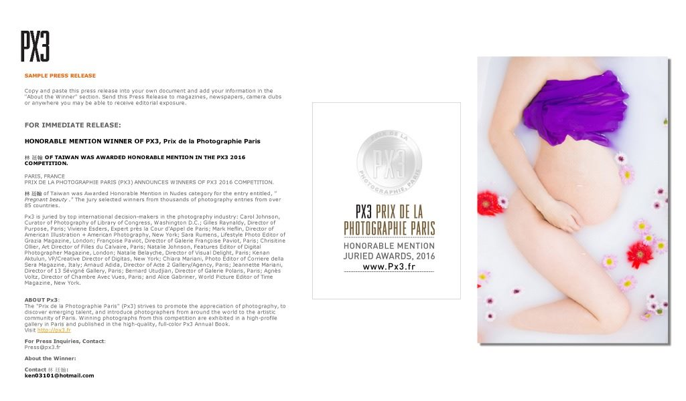
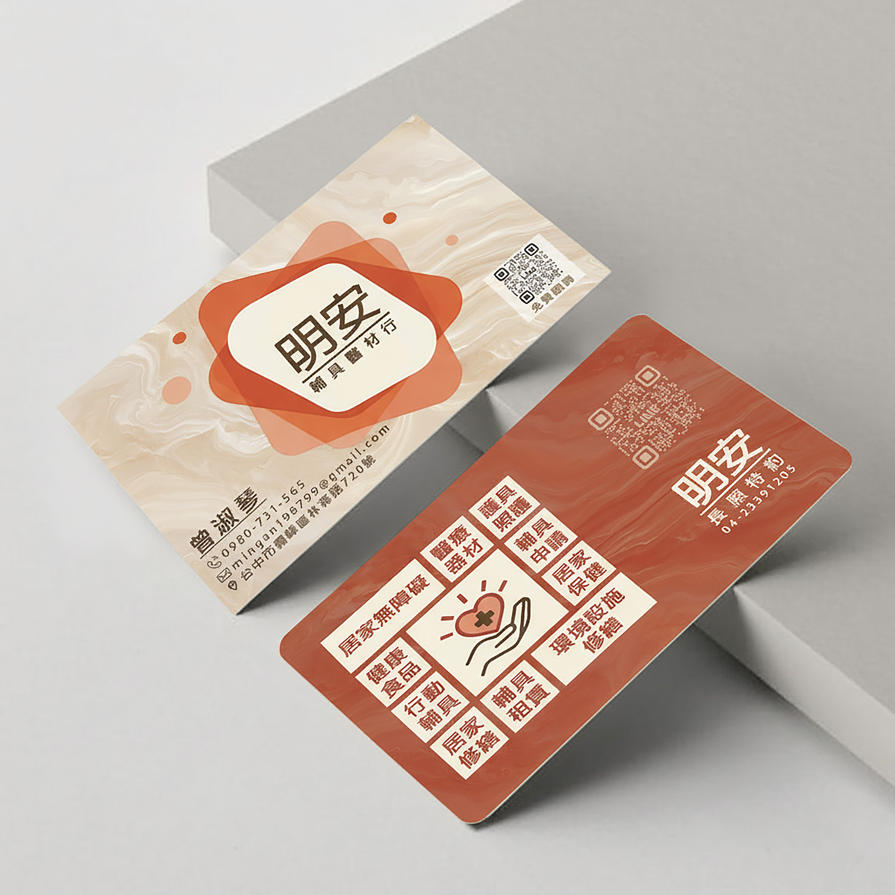

「Mr.Q 真的太懂新人了！拍攝當天完全不給任何壓力，像朋友一樣陪伴我們，抓住許多連伴娘都沒注意到的溫馨瞬間。收到照片時我們兩個人看得熱淚盈眶，色調超級耐看！」

點擊放大檢視榮譽證書
ABOUT PHOTOGRAPHER
關於 Mr.Q 視界攝影
「每一次按下快門，都是一場與光影、情感的深邃對話。」
我是 Mr.Q，專注於婚禮紀實、建築室內空間美學、動態活動與品牌商業拍攝。 對我而言，婚禮紀錄是溫馨而富含情感的生命印記，不作刻意擺拍，而是細膩珍藏雙方眼眸間的深情與笑淚； 而室內空間攝影則是理性專業的結構藝術，講究透視垂直、自然採光與空間材質的真實質地。
堅持忠於每張照片的原始構圖與視角，直橫並蓄，讓畫面以最和諧自然的姿態訴說本質。
2016 JURIED AWARDS
PX3 PRIX DE LA PHOTOGRAPHIE PARIS
HONORABLE MENTION 榮譽獎
獲獎作品 Entry: "Pregnant beauty" WEDDING & STORIES
婚禮紀錄 溫馨紀實
「珍藏每份相遇的溫度，用有溫度的鏡頭記錄愛與陪伴」
涵蓋：婚禮午晚宴 ｜ 戶政事務所登記 ｜ 訂婚迎娶儀式 ｜ 寵物毛孩紀錄
ARCHITECTURE & INTERIOR
室內空間攝影 專業結構美學
「精準透視 ‧ 還原自然採光 ‧ 詮釋室內設計材質層次」
專為建築師、室內設計團隊、私宅屋主打造的頂級空間影像

透天別墅 ｜ 寬闊場域
台中私宅 ‧ 沙鹿獨棟
點擊檢視大圖
溫暖居所 ｜ 機能美學
苗栗私宅 ‧ 溫馨三房
點擊檢視大圖
綠意景觀 ｜ 奢華品味
台中私宅 ‧ 精銳Garden One
點擊檢視大圖 EVENT & DOCUMENTARY
活動紀錄 現場動態紀實
「捕捉不彩排的真情流露，保存專屬那一刻的狂熱與感動」
快閃展覽 ｜ 音樂盛典 ｜ 家族同遊 ｜ 品牌發表會

快閃企劃 ｜ 現場人潮與佈置
PUPPET SUNSUN 快閃店
點擊檢視大圖
甜點品牌 ｜ 快閃巡迴
瑪芬角落 快閃店
點擊檢視大圖 COMMERCIAL & BRANDING
商業拍攝 品牌質感視覺
「以專業棚燈光線雕琢細節，讓商品與店家散發出無可取代的吸引力」
精緻甜點 ｜ 保養精品 ｜ 實體門市 ｜ 平面名片設計呈現

美食甜點 ｜ 濃郁層次
商品拍攝 ‧ 巴斯克蛋糕
點擊檢視大圖
健康保健 ｜ 專業包裝
商品拍攝 ‧ EX綜合B1000+
點擊檢視大圖
醬料手作 ｜ 辛香食慾感
商品拍攝 ‧ 椒堂·麻辣醬
點擊檢視大圖
美妝護膚 ｜ 高雅光影
商品拍攝 ‧ QD保養品
點擊檢視大圖
平面識別 ｜ 紙質與燙金細節
名片設計 ‧ 明安藥局
點擊檢視大圖
TESTIMONIALS
客戶好評推薦
謝謝每一位信任 Mr.Q 的新人、設計師與品牌夥伴，用真實回饋見證每一刻的感動
「身為室內設計師，最怕攝影師把空間比例拍變形或白平衡跑掉。Mr.Q 具備極強的建築透視眼光，光線層次分明，把我們選用的石材與木皮質感發揮得淋漓盡致，已經指定成為我們事務所常態攝影師！」
「商品照拍得太有靈魂了！我們家的香氛與花藝商品在 Mr.Q 的打光之下，細膩得像法式雜誌封面。照片上架社群後詢問度翻倍，非常推薦需要質感形象照的品牌合作。」
「我們只在士林戶政辦登記，原本很擔心只是簽字會很單調，但 Mr.Q 幫我們拍出清新又感人的登記寫真！光線拿捏極佳，連戶政事務所的日常角落都能拍得像日劇劇照一樣唯美。」
「狗狗今年滿 10 歲，一直想為牠留下紀念。Mr.Q 非常有愛心與耐心，默默蹲在草地上等牠最放鬆的笑容，沒有硬逼擺拍，拍到了牠雙眸裡對我們的信任。這組照片是我們家一輩子的傳家寶。」
「家裡剛裝潢好想留做紀念，拍出來的效果比現場肉眼看到的還驚艷！光線灑進客廳的氛圍被完美捕捉，朋友看過後都以為是哪本居家生活雜誌的範例實景。」
「訂婚儀式流程非常繁複，Mr.Q 經驗非常豐富，甚至還能適時提醒我們走位跟節奏。公婆與長輩看到成品直誇攝影師禮貌周到又專業，照片張張精彩！」
「感謝 Mr.Q 為穀德商行拍攝空間與商品照。他精準掌握了我們想要呈現的職人質樸感與溫暖氛圍，Google 商家更新這批照片後，來客數明顯成長！」
「快閃店現場人流非常大，Mr.Q 在不干擾動線的情況下，捕捉了超多顧客驚喜笑容與展場細節。照片出圖速度快、品質穩定，未來活動檔期一定首選！」
留下您的寶貴推薦
曾經與 Mr.Q 合作過嗎？歡迎分享您的體驗與感動！
FREQUENTLY ASKED QUESTIONS
常見問題解答
關於檔期預約、拍攝流程、計費與交件方式的常見疑問
婚禮攝影包含哪些流程？可拍攝儀式與宴客嗎？
涵蓋單儀式、雙儀式（文定/迎娶）、午宴、晚宴、儀式+午晚宴全天紀錄，以及戶政事務所登記寫真與宴會空檔的類婚紗拍攝。攝影師 Mr.Q 具備豐富引導經驗，協助掌控儀式節奏並捕捉最自然的溫馨瞬間。
全台灣各地都可以預約拍攝嗎？車馬費如何計算？
服務範圍涵蓋全台灣各地，包含台北、新北、基隆、桃園、新竹、苗栗、台中、彰化等。雙北及基隆地區通常免收或僅收取基本交通費，其他縣市依高鐵或實際交通成本透明報價，絕無隱藏費用。
拍攝後多久可以收到照片成品？成品包含哪些內容？
拍攝結束後約 3 個月內完成全數交付。成品包含全部色調與光影微調後的照片大圖，並提供私密雲端相簿方便新人與親友直接下載與分享。
室內空間攝影與裝潢案場如何預約配合？
室內設計公司、統包團隊、軟裝師或私宅業主建議提前 1～2 週確認拍攝日期。拍攝前建議確認案場軟裝陳設與現場採光時間，攝影師將以專業廣角鏡頭與移軸視角捕捉空間層次與建材細節。
如何預約檔期與確認方案報價？
您可以直接填寫下方「預約拍攝諮詢」表單，或是直接加入攝影師個人 LINE ID: ken03101、寄信至 ken03101@hotmail.com，我們將於 24 小時內親自回覆您完整的檔期與方案報價！
CONTACT US
預約拍攝諮詢
每段重要的故事都值得被慎重記錄。歡迎告訴我們您的日期、地點與拍攝構想， 表單送出後會直接寄發通知信至攝影師專用信箱，我們將儘速為您評估檔期並提供專業建議。
LINE 即時快速諮詢
LINE ID: ken03101 點擊加好友 →
聯絡信箱 EMAIL
ken03101@hotmail.com
INSTAGRAM 官方專頁 主要作品更新
@mr.q_wedding_photography
FACEBOOK 粉絲專頁
Mr.Q 視界攝影
服務地區 SERVICE REGION
全台服務 ｜ 基隆 ‧ 台北 ‧ 新北 ‧ 桃園 ‧ 台中 ‧ 苗栗等各縣市海外皆可安排